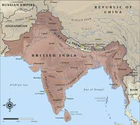

Introduction
The British Raj refers to the period of British rule over the Indian subcontinent. It was marked by both modernization and exploitation.
Extent of British colonial territory in India
Timeline of Events
Key events from the Revolt of 1857 to India's independence in 1947 shaped this period.
Administration and Reforms
The British established new administrative structures, introduced railways, and developed legal and educational systems.
Impact on Society
The British influence led to social reform, economic changes, and the rise of nationalist movements.